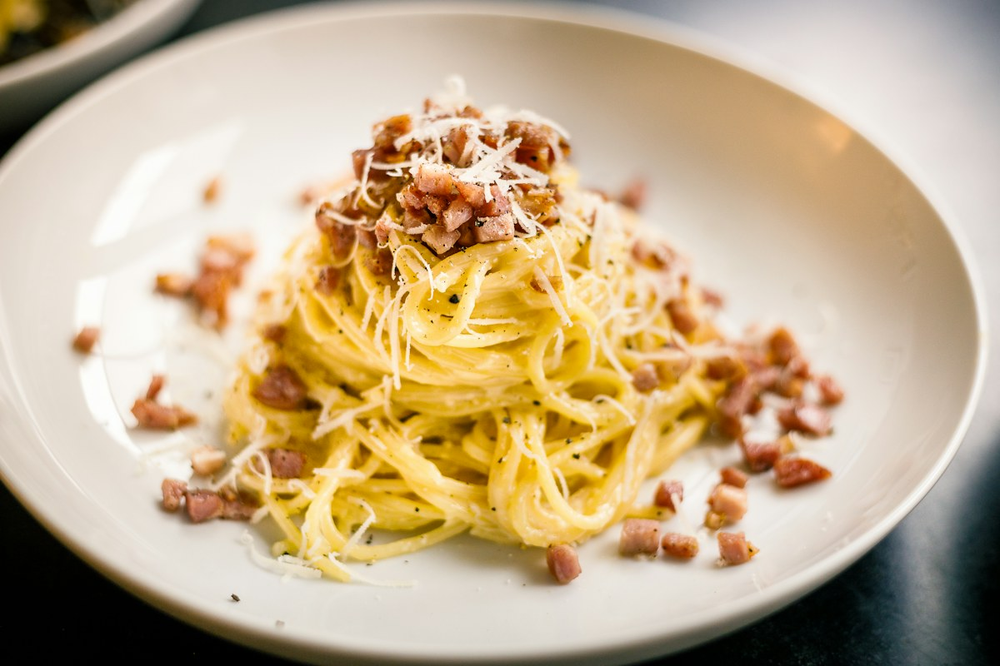

Prep Time15 min
Cook Time20 min
Servings4 people
EasyItalian
Creamy Spaghetti Carbonara
A classic Italian pasta dish with eggs, cheese, and pancetta
Extended Preparation TimeThis recipe requires more than 45 minutes to prepare. Plan accordingly!